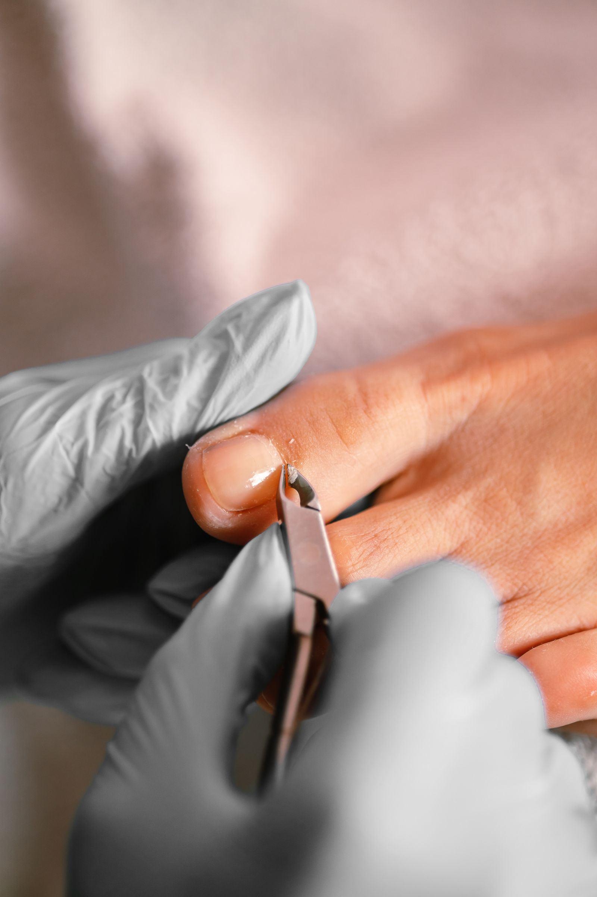

What we treat
Services
We treat the full range of nail, skin, structural and medical foot conditions, plus supply custom orthotics and footcare products. Not sure which category your problem falls under? Just call us and describe it.
Problem Nails
- Fungal nailsAssessment and treatment to clear fungal infection and stop it spreading to other nails.
- Ingrown nailsIn-clinic removal of the offending nail edge, with longer-term options if it keeps recurring.
- Thick nailsSafe reduction and filing of thickened nails, often linked to old injury or fungal infection.
- Nail surgeryA minor procedure under local anaesthetic to permanently resolve a persistently ingrown or painful nail.

Foot Conditions
- Hard skinRemoval of built-up hard skin that can crack or become painful if left untreated.
- CallusCareful reduction of thickened, pressure-related skin on the sole of the foot.
- CornsRemoval of painful corns, with advice on the pressure or footwear causing them.
- Warts & verrucaeTreatment to clear verrucae, including cases that haven’t responded to home remedies.
- HammertoesAssessment and management of toes that have curled or bent out of their normal position.
- Cracked heelsTreatment and skincare advice to heal deep cracks before they become painful or infected.
- Plantar fasciitisAssessment and treatment for heel and arch pain caused by inflammation of the plantar fascia.
- Ankle sprainAssessment of ankle injuries with advice on recovery and rehabilitation.
- High instepsAssessment of high-arched feet and any related pressure or fitting problems.
- FlatfootAssessment of fallen arches and advice on supportive footwear or orthotics.
- Gait abnormalitiesAssessment of the way you walk, to identify what’s causing pain elsewhere in the foot or leg.
Medical Conditions
- DiabetesRegular diabetic foot checks to help catch circulation or nerve problems early.
- Rheumatoid arthritisOngoing foot care for the joint pain and deformity rheumatoid arthritis can cause in the feet.
- OsteoarthritisManagement of the wear-related joint pain osteoarthritis can cause in the feet and ankles.
Orthotics & Footcare Products
- Custom orthoticsMade to support the specific shape and needs of your feet.
- Footcare productsCreams, gels and protective devices to manage day-to-day foot problems between appointments.
Before you book
A few common questions
Do I need a referral to see a chiropodist?
Most patients book directly with us and don’t need a referral for a routine appointment. If you have a specific medical concern, it’s worth mentioning it when you call so we can advise.
What should I bring to my first appointment?
Any footwear you wear regularly, a list of current medications, and details of any relevant medical conditions such as diabetes or arthritis.
Do you treat children?
Yes — we see patients of all ages, from children through to older adults.
Which clinic should I visit?
Either — call whichever is more convenient. Both West Hampstead and Tottenham are run to the same standard of care.
Not sure what you need?
Just call us and describe the problem — we’ll point you in the right direction.